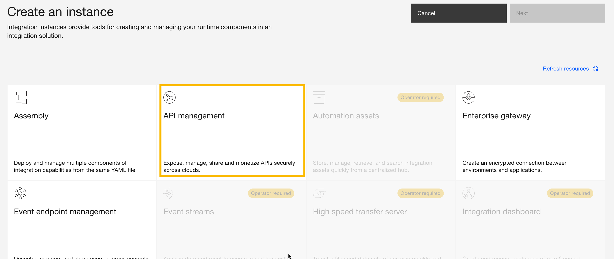
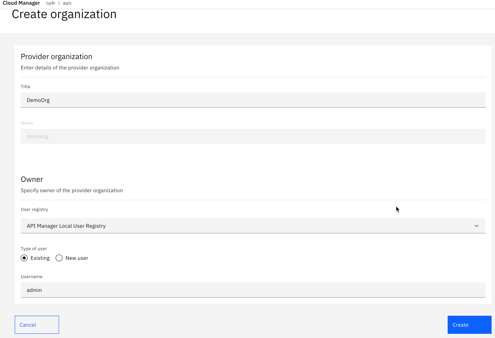
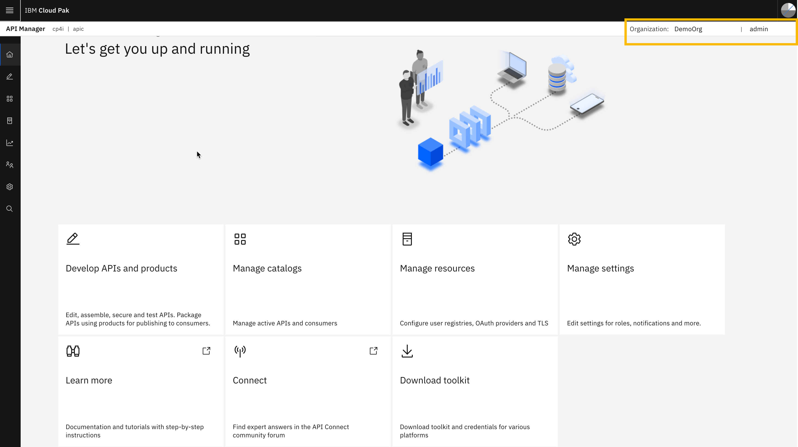

Configure API and Event Endpoint Management
In this section for the configure we will be configuring the combined API and Event End Point Manger, along with analytics and developer portal. The key components of this architecture are highlighted in the below image.

In this part of the Scenario, we will confiure
- API Management Subsystem which includes the API and Cloud Manager components which admister the API subsystems
- The Analytics subsystem that gather statiistical data for analysis on the usage and perfomance of the API and event gateways
- THe API Gateways which provide the exposed interfaces for consumers and connectivity to API implementations
- Event Gateways Service handles incoming requests from applications that want to consume from the stream of events

- Firstly we will configure the capabiltiies and wait for OCP to start the pods.
- Once the capailites for API are configured we will set the email server in the Cloud Manager
- We will subsequently configure a provider organisation and the organisation owner
- Define a developer portal and some users for the portal for the created oganistion
- Create the API catalog for this demosntration
- Define the event gateway service for the manger.
For this configuration we will use the Integration Platform UI of the Cloud Pak for Integration the UI gives us a straight forward UI that allows for fast and easy configuration of the integration capabilties. See the previously given Login instruction and login into the CP4I Platform UI using the admin user id.
- Navigate to the Integration Instances page from the Platform UI home page
- Click on the Create Instance button. On the Create Instance page you will see the integration capabilities that can be configured. Greyed out capabilities is an indicator that the operators for these capabilities are not yet installed.
- Select API Management and Click Next 
- Select Medium Single Replica and Click Next. This will install a Single instances of Management, Developer Portal, API Analytics and API Gateways.
- On the capability configuration screen for API we will do a minimalistic setup and this install we are not exploring advanced settings and options. If you want to see some of the advanced settings you can toggle the advanced settings button. But for the purposes of the scenario only a basic setup as per the chosen profile in the previous step is needed.
- Enter a name in the "Name" field here we used apic
- Toggle the "Accept License agreement" to accepted
- "License use" is optional but normally set to non production
- "License ID" can use the default as per selection it may not match exactly what is in the screenshot but would be similar
- Check that the "Storage Class" is set it should be set to a esisting storage class type that matches the RWO requirement
- Once you are happy with the settings click the Create Button in the top right corner
- The capabilities will now install and once it has we will complete additional configurations. You can proceed with the next step configuring the mailtrap while you wait for this to progress. When complete successfully you will see three new integration instances types
- API-managed enterprise gateway (apic-gw)
- API management adminstration (apic)
- API management (apic)
- Once the new integration intances are created you can also take a look at the created pods. you should observe and outcome similar to the below image showing the running pods for API mangement, Analytics and API Gateways


oc get pods -n cp4i --field-selector=status.phase=Running | grep apic
- Navigate to Mail Trap click the Sign Up in the top right corner.
- Create a new user account entering a email id. Prefer a public email address to your corporate email address.
- Verify the New account using the verification email sent to your supplied email address.
- Proceed to Log In to Mail Trap.
- Log In to Mail Trap click the Log In button in the top right corner. Enter the user email and password click Log In
- Select Email Testing > Inboxes and click MyInbox to navigate to the inbox we will use for testing with the API Manager.
- On the inbox window click Show Credentials to reveal the SMTP settings that we will apply in the API Manager.
- SMTP Settings,
- From the Integration Instances view click on the "apic" link for the API management adminstration instance.
- Login continuing with the Cloud Manager "Common Services User Registry". This will allow us to continue as the default created "admin" user.
- Click on the "Manage Resources" tile.
- From the Resoruces view select "Notifications" from the menu. In the Notifications view click the "Create" Button.
- Enter the mail server settings from the Mail Trap SMTP settings.
- Test the connection by sending a test email.
- Once complete the test email sent will be confirmed.
- Return to the mail trap inbox and you can view the test mail sent.
- Click the setings (cog) button on the left hand icon menu.
- Click the Notifications submenu in the Settings view. Click the Edit button to edit the mail server settings.
- Select the new mail server thta was just defined and save the the change.
- Saved changes to mailserver.
- Saved changes to mailserver.No Click on the Home Icon from the Icon Menu this will take us to the Home view for the catalog manager which is where the next section will begin.
In this section we will use mail trap and configure SMTP notfications from the API Manager.
To configure the nofifications we need a SMTP server setup for this lab we will use mailtrap to simulate the SMTP server.
Note if you set this up as part of the lab prerequsites or already have a mail trap account proceded to the Logon to Mail Trap. If you prefer to not signup ask your instructor for the details to a mail trap account that has been setup prior to the lab.


- From the Cloud Manager howm view click on the Manage Organizations tile. You could also click on the Provider organizations Icon from the Icon menu.
- Click on the add button to begin creating the new provider organization.
- Enter the name of the Organization details and the Organization Owner. In this simple demo we will persist with using the admin user as the owner. When the data is entered click Create button. 
- Change from the Cloud Manager to the API Manager. Click on the IBM Cloud Pak image button on the top left corner of the Cloud Manager. Once
- In the Cloud Pak UI home page, click on the "Design APIs" menu link, this will launch the API Manager. Note you may or may not be promted for login. The provider organisation we created uses admin user which is part of the Common Services User Registry.
- When the API Manager opens confirm the provider organization (DemoOrg) and user (admin) are correct. 
- For creating the developer portal the Organization Owner must have a email address. The admin id does not have an address at this potin so we will modify the settings now to add an email address to the owner.
- Enter a email address into the email field. Note emails will not actually be sent to this address as we are trapping them in the mail trap setup earlier.
- Click Save once email address is set .
- Click on the Manage Catalogs tile on the API Manager Home view.
- Click Add on the Manage catalog view.
- Complete the Catalog definition and Click the create button.
- Click the Demo Catalog tile
- Click on the "Catalog Settings" Tab and then Select the "Portal" settings from the left hand menu. Click the Create button to setup the Developer Portal for the catalog.
- Select the portal-service from the select menu and click the Create button.
- The portal service will be initiated it takes a few minutes to ready. After a few minutes try the URL. If the portal loads proceed to mailtrap and follow the instructions for setting the developer portal admin password.
- Wait some time then copy the Developer portal URL and paste it in a new incognito browser. This should help work around any insecure and certificate warnings.
- Click on the Show Advanced Button and Click proceed to site.
- Once you see the home page for the portal proceed to the next step to complete the site setup by setting the admin password.
- Switch to the Mail Trap tab or if it was closed reopen and Log In to Mail Trap in new browser tab. In your Inbox you will see a email from the Developer Portal to setup the admin password.
- Copy the link in the email and paste to new ingognito tab.
- Click Reset Button to continue.
- Set the new password. In this example copy the admin password from the Cloud pak Status tab of the configuration browser window. And then click Submit.
- This completes this section of the instruction for the API Connect.
In this section we will create a provider orgnanization, catalog, and Developer Portal. Which will be used later in the creation and publising of APIs.